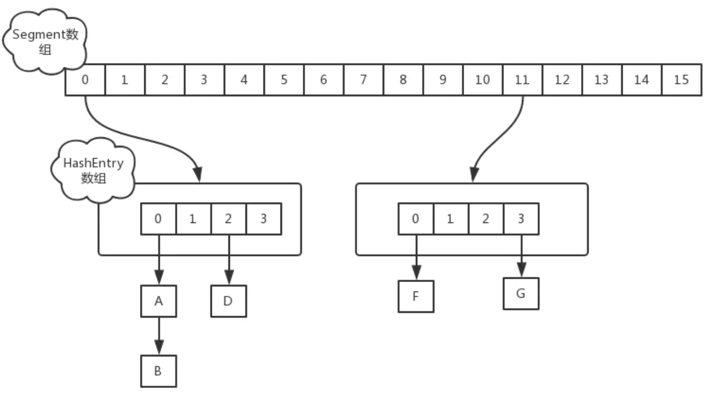
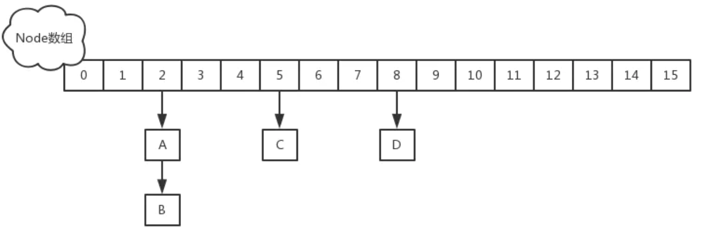

Java ConcurrentHashMap
JDK1.7
存储结构
ConcurrentHashMap和HashMap实现上类似，最主要的差别是ConcurrentHashMap采用了分段锁（Segment），每个分段锁维护着几个桶（HashEntry），多个线程可以同时访问不同分段锁上的桶，从而使其并发度更高（并发度就是 Segment 的个数）。

操作每个segment时，需要获取这个segment的锁。Segment继承ReentrantLock，基于AQS实现。
put实现
当执行put方法插入数据时，根据key的hash值，在Segment数组中找到相应的位置，如果相应位置的Segment还未初始化，则通过CAS进行赋值，接着执行Segment对象的put方法通过加锁机制插入数据，实现如下：
public V put(K key, V value) {
Segment<K,V> s;
if (value == null)
throw new NullPointerException();
int hash = hash(key);
int j = (hash >>> segmentShift) & segmentMask;
if ((s = (Segment<K,V>)UNSAFE.getObject // nonvolatile; recheck
(segments, (j << SSHIFT) + SBASE)) == null) // in ensureSegment
s = ensureSegment(j);
return s.put(key, hash, value, false);
}
// Segment 继承 ReentrantLock
static final class Segment<K,V> extends ReentrantLock implements Serializable {
transient volatile HashEntry<K,V>[] table;
transient int count;
transient int modCount;
transient int threshold;
final float loadFactor;
Segment(float lf, int threshold, HashEntry<K,V>[] tab) {
this.loadFactor = lf;
this.threshold = threshold;
this.table = tab;
}
final V put(K key, int hash, V value, boolean onlyIfAbsent) {
HashEntry<K,V> node = tryLock() ? null :
scanAndLockForPut(key, hash, value); //获取锁
V oldValue;
try {
HashEntry<K,V>[] tab = table;
int index = (tab.length - 1) & hash;
HashEntry<K,V> first = entryAt(tab, index);
for (HashEntry<K,V> e = first;;) {
if (e != null) {
K k;
if ((k = e.key) == key ||
(e.hash == hash && key.equals(k))) {
oldValue = e.value;
if (!onlyIfAbsent) {
e.value = value;
++modCount;
}
break;
}
e = e.next;
}
else {
if (node != null)
node.setNext(first);
else
node = new HashEntry<K,V>(hash, key, value, first);
int c = count + 1;
if (c > threshold && tab.length < MAXIMUM_CAPACITY)
rehash(node);
else
setEntryAt(tab, index, node);
++modCount;
count = c;
oldValue = null;
break;
}
}
} finally {
unlock();//释放锁
}
return oldValue;
}
private HashEntry<K,V> scanAndLockForPut(K key, int hash, V value) {
HashEntry<K,V> first = entryForHash(this, hash);
HashEntry<K,V> e = first;
HashEntry<K,V> node = null;
int retries = -1; // negative while locating node
while (!tryLock()) {
HashEntry<K,V> f; // to recheck first below
if (retries < 0) {
if (e == null) {
if (node == null) // speculatively create node
node = new HashEntry<K,V>(hash, key, value, null);
retries = 0;
}
else if (key.equals(e.key))
retries = 0;
else
e = e.next;
}
else if (++retries > MAX_SCAN_RETRIES) {
lock();
break;
}
else if ((retries & 1) == 0 &&
(f = entryForHash(this, hash)) != first) {
e = first = f; // re-traverse if entry changed
retries = -1;
}
}
return node;
}
}
场景：线程A和线程B同时执行相同Segment对象的put方法
1、线程A执行tryLock()方法成功获取锁，则把HashEntry对象插入到相应的位置； 2、线程B获取锁失败，则执行scanAndLockForPut()方法，在scanAndLockForPut方法中，会通过重复执行tryLock()方法尝试获取锁，在多处理器环境下，重复次数为64，单处理器重复次数为1，当执行tryLock()方法的次数超过上限时，则执行lock()方法挂起线程B； 3、当线程A执行完插入操作时，会通过unlock()方法释放锁，接着唤醒线程B继续执行；
size操作
每个Segment维护了一个count变量来统计该Segment中的键值对个数。在执行size操作时，需要遍历所有Segment然后把count累计起来。ConcurrentHashMap在执行size操作时先尝试不加锁，如果连续两次不加锁操作得到的结果一致，那么可以认为这个结果是正确的。尝试次数使用RETRIES_BEFORE_LOCK定义，该值为2，retries初始值为-1，因此尝试次数为3。如果尝试的次数超过3次，就需要对每个Segment加锁。
public int size() {
// Try a few times to get accurate count. On failure due to
// continuous async changes in table, resort to locking.
final Segment<K,V>[] segments = this.segments;
int size;
boolean overflow; // true if size overflows 32 bits
long sum; // sum of modCounts
long last = 0L; // previous sum
int retries = -1; // first iteration isn't retry
try {
for (;;) {
if (retries++ == RETRIES_BEFORE_LOCK) {
for (int j = 0; j < segments.length; ++j)
ensureSegment(j).lock(); // force creation
}
sum = 0L;
size = 0;
overflow = false;
for (int j = 0; j < segments.length; ++j) {
Segment<K,V> seg = segmentAt(segments, j);
if (seg != null) {
sum += seg.modCount;
int c = seg.count;
if (c < 0 || (size += c) < 0)
overflow = true;
}
}
if (sum == last)
break;
last = sum;
}
} finally {
if (retries > RETRIES_BEFORE_LOCK) {
for (int j = 0; j < segments.length; ++j)
segmentAt(segments, j).unlock();
}
}
return overflow ? Integer.MAX_VALUE : size;
}
JDK1.8
数据存储
1.8中放弃了Segment臃肿的设计，取而代之的是采用Node + CAS + Synchronized来保证并发安全进行实现，结构如下：

public class ConcurrentHashMap<K,V> extends AbstractMap<K,V>
implements ConcurrentMap<K,V>, Serializable {
transient volatile Node<K,V>[] table;
static class Node<K,V> implements Map.Entry<K,V> {
final int hash;
final K key;
volatile V val;
volatile Node<K,V> next;
}
}
当node的节点数量大于8个时转成红黑数。
Node初始化
在执行put操作时，如果发现table没有初始化，则进行table的初始化。初始化时通过CAS加锁。
public V put(K key, V value) {
return putVal(key, value, false);
}
/** Implementation for put and putIfAbsent */
final V putVal(K key, V value, boolean onlyIfAbsent) {
if (key == null || value == null) throw new NullPointerException();
int hash = spread(key.hashCode());
int binCount = 0;
for (Node<K,V>[] tab = table;;) {
Node<K,V> f; int n, i, fh;
if (tab == null || (n = tab.length) == 0)
tab = initTable();
....
}
}
private final Node<K,V>[] initTable() {
Node<K,V>[] tab; int sc;
while ((tab = table) == null || tab.length == 0) {
if ((sc = sizeCtl) < 0)
Thread.yield(); // lost initialization race; just spin
else if (U.compareAndSwapInt(this, SIZECTL, sc, -1)) {
try {
if ((tab = table) == null || tab.length == 0) {
int n = (sc > 0) ? sc : DEFAULT_CAPACITY;
@SuppressWarnings("unchecked")
Node<K,V>[] nt = (Node<K,V>[])new Node<?,?>[n];
table = tab = nt;
sc = n - (n >>> 2);
}
} finally {
sizeCtl = sc;
}
break;
}
}
return tab;
}
put实现
final V putVal(K key, V value, boolean onlyIfAbsent) {
if (key == null || value == null) throw new NullPointerException();
int hash = spread(key.hashCode());
int binCount = 0;
for (Node<K,V>[] tab = table;;) {
Node<K,V> f; int n, i, fh;
//如果发现table没有初始化，则进行table的初始化
if (tab == null || (n = tab.length) == 0)
tab = initTable();
//1、如果相应位置的Node还未初始化，则通过CAS插入相应的数据
else if ((f = tabAt(tab, i = (n - 1) & hash)) == null) {
if (casTabAt(tab, i, null,
new Node<K,V>(hash, key, value, null)))
break;
}
else if ((fh = f.hash) == MOVED)
tab = helpTransfer(tab, f);
else {
V oldVal = null;
//则对该节点加synchronized锁
synchronized (f) {
if (tabAt(tab, i) == f) {
if (fh >= 0) {
binCount = 1;
for (Node<K,V> e = f;; ++binCount) {
K ek;
if (e.hash == hash &&
((ek = e.key) == key ||
(ek != null && key.equals(ek)))) {
oldVal = e.val;
if (!onlyIfAbsent)
e.val = value;
break;
}
Node<K,V> pred = e;
if ((e = e.next) == null) {
pred.next = new Node<K,V>(hash, key,
value, null);
break;
}
}
}
else if (f instanceof TreeBin) {
Node<K,V> p;
binCount = 2;
if ((p = ((TreeBin<K,V>)f).putTreeVal(hash, key,
value)) != null) {
oldVal = p.val;
if (!onlyIfAbsent)
p.val = value;
}
}
}
}
if (binCount != 0) {
if (binCount >= TREEIFY_THRESHOLD)
treeifyBin(tab, i);
if (oldVal != null)
return oldVal;
break;
}
}
}
addCount(1L, binCount);
return null;
}
size操作
1.8中使用一个volatile类型的变量baseCount记录元素的个数，当插入新数据或则删除数据时，会通过addCount()方法更新baseCount。
统计时只需要统计每个Node的baseCount数量。
总结
JDK1.8版本的ConcurrentHashMap的数据结构已经接近HashMap，相对而言，ConcurrentHashMap只是增加了同步的操作来控制并发，从JDK1.7版本的ReentrantLock+Segment+HashEntry，到JDK1.8版本中synchronized+CAS+HashEntry+红黑树：
1、JDK1.8的实现降低锁的粒度，JDK1.7版本锁的粒度是基于Segment的，包含多个HashEntry，而JDK1.8锁的粒度就是HashEntry（首节点）
2、JDK1.8版本的数据结构变得更加简单，使得操作也更加清晰流畅，因为已经使用synchronized来进行同步，所以不需要分段锁的概念，也就不需要Segment这种数据结构了，由于粒度的降低，实现的复杂度也增加了
3、JDK1.8使用红黑树来优化链表，基于长度很长的链表的遍历是一个很漫长的过程，而红黑树的遍历效率是很快的，代替一定阈值的链表，这样形成一个最佳拍档
4、JDK1.8为什么使用内置锁synchronized来代替重入锁ReentrantLock
- 因为粒度降低了，在相对而言的低粒度加锁方式，synchronized并不比ReentrantLock差，在粗粒度加锁中ReentrantLock可能通过Condition来控制各个低粒度的边界，更加的灵活，而在低粒度中，Condition的优势就没有了
- JVM的开发团队从来都没有放弃synchronized，而且基于JVM的synchronized优化空间更大，使用内嵌的关键字比使用API更加自然
- 在大量的数据操作下，对于JVM的内存压力，基于API的ReentrantLock会开销更多的内存，虽然不是瓶颈，但是也是一个选择依据
HashMap在put的时候，插入的元素超过了容量（由负载因子决定）的范围就会触发扩容操作，就是rehash，这个会重新将原数组的内容重新hash到新的扩容数组中，在多线程的环境下，存在同时其他的元素也在进行put操作，如果hash值相同，可能出现同时在同一数组下用链表表示，造成闭环，导致在get时会出现死循环，所以HashMap是线程不安全的。
HashTable，它是线程安全的，它在所有涉及到多线程操作的都加上了synchronized关键字来锁住整个table，这就意味着所有的线程都在竞争一把锁，在多线程的环境下，它是安全的，但是无疑是效率低下的。
其实HashTable有很多的优化空间，锁住整个table这么粗暴的方法可以变相的柔和点，比如在多线程的环境下，对不同的数据集进行操作时其实根本就不需要去竞争一个锁，因为他们不同hash值，不会因为rehash造成线程不安全，所以互不影响，这就是锁分离技术，将锁的粒度降低，利用多个锁来控制多个小的table，这就是ConcurrentHashMap JDK1.7版本的核心思想。